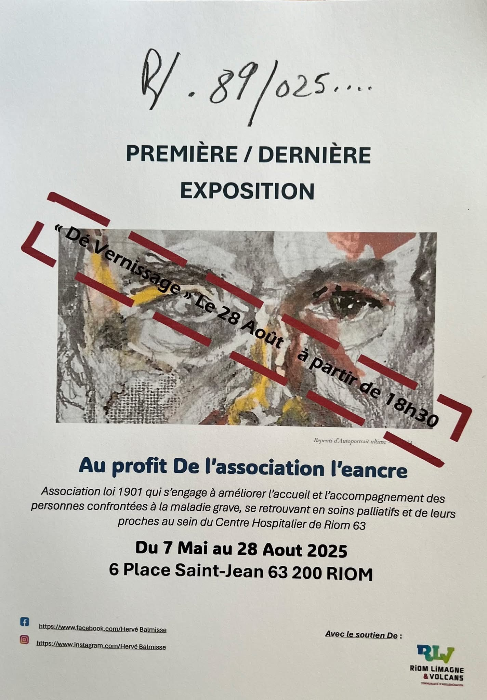

Expositions, conférences, presse, événements — suivez toute la vie de L'Eancre.

Une exposition artistique pensée au service du soin et de l'accompagnement. Les œuvres d'Hervé Balmisse investissent la Place Saint-Jean de Riom du 7 mai au 28 août 2025.
Un vernissage public a rassemblé patients, soignants, proches et citoyens le 28 août 2025 à 18h30, créant un moment fort de partage autour de l'art et de la vie.
Lire l'article de presseExposition-vente au profit de L'Eancre. Hervé Balmisse, artiste atteint d'un cancer incurable, expose des œuvres réalisées entre 1989 et 2025. Vernissage de clôture le 28 août 2025 à 18h30.
Mot de l'artiste →Le quotidien régional consacre un article à notre action et à l'exposition à venir à la Place Saint-Jean de Riom.
Lire l'article →Une rencontre ouverte réunissant soignants, patients et familles pour parler librement de l'accompagnement en fin de vie.
Lire la suite →Un moment de grâce pour les patients, leurs proches et les équipes soignantes du Centre Hospitalier de Riom.
Lire la suite →L'association fête ses 10 ans avec l'inauguration du jardin thérapeutique et une journée portes ouvertes au CH de Riom.
Lire la suite →Participation active aux JNSP avec ateliers, stands et rencontres pour sensibiliser le grand public à Riom.
Lire la suite →« L'art au service de l'hôpital pour embellir le quotidien des patients en soins palliatifs »
Voir l'article →Le festival Piano à Riom cite l'exposition d'Hervé Balmisse parmi les événements culturels incontournables de l'été à Riom.
Voir la mention →Hervé Balmisse explique pourquoi il organise cette exposition au profit de L'Eancre, association qui l'accompagne depuis plus de cinq ans.
Lire le document →